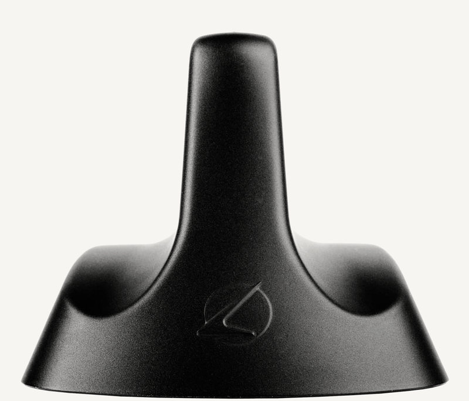
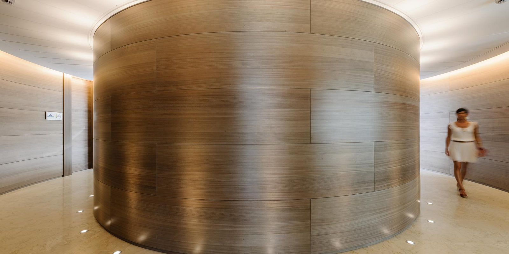
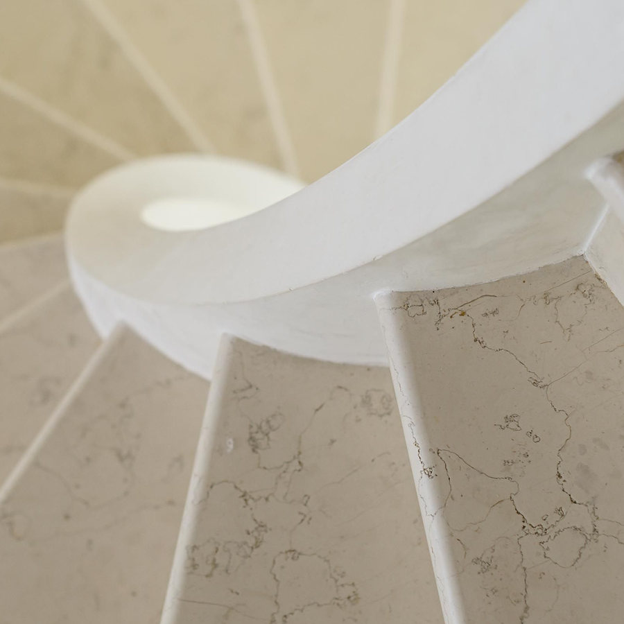
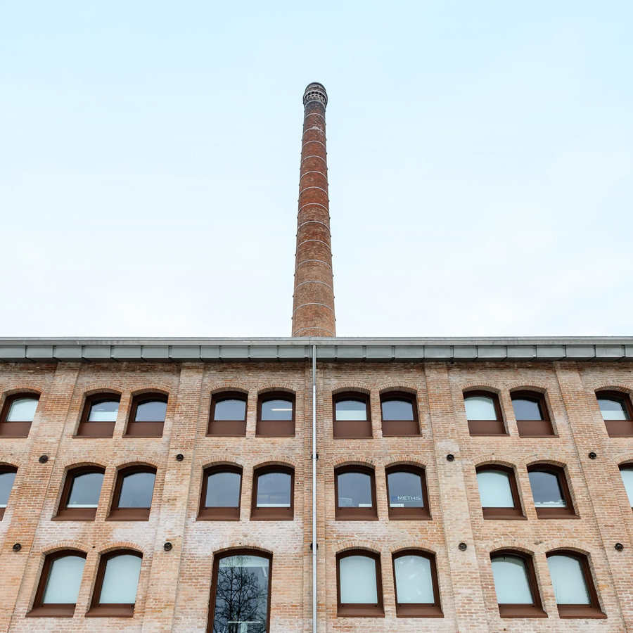
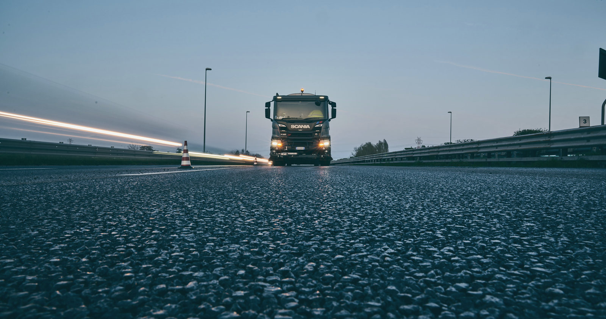
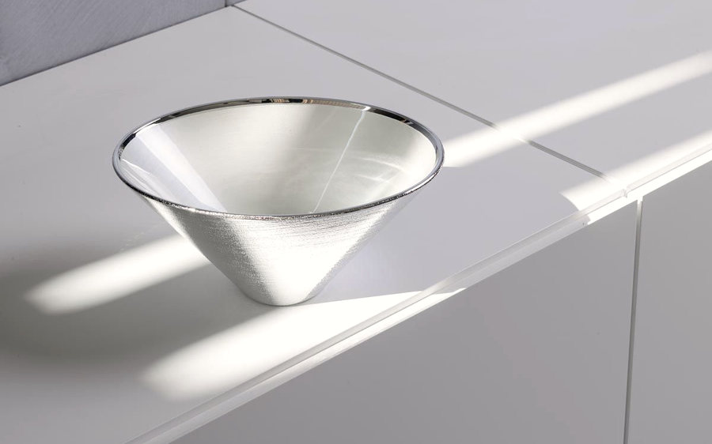

Le foto sono comunicazione silenziosa

Stefano Aiti fotografa oggetti, architetture e cantieri per le aziende, dal suo studio di Mestrino, in provincia di Padova. Professionista dal 2008.
Calearo, antenna 1/5
Architettura e contract
Banche e casse rurali arredate da Artufficio, le scale in marmo di Studio 4 Marmicolor, la Fornace Morandi. Stefano Aiti è laureato in Architettura allo Iuav di Venezia.




Industria e cantieri
Con Aiti Studio il lavoro va dove si costruiscono strade e impianti: reportage di cantiere, fotografia aziendale, grafica delle livree dei mezzi, video e siti web. Per Salima, Girardini, Martini Silvestro e per il cantiere Anas di Carpane.
«Ideazione, realizzazione ed editing vengono svolti totalmente da noi e con la nostra attrezzatura»
Aiti Studio, Mestrino
Per aziende orgogliose di ciò che fanno
Lago, Luceplan, Artufficio, Calearo, Calegaro, Bellissima Vodka, Trek, Goppion Caffè, Saip, Superoro, Pianegonda, e nei cantieri Salima, Girardini, Martini Silvestro
Fotografa dal 1995 e ha aperto lo studio nel 2008, con due lauree allo Iuav: Architettura e Comunicazioni visive e multimediali.
